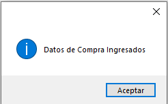
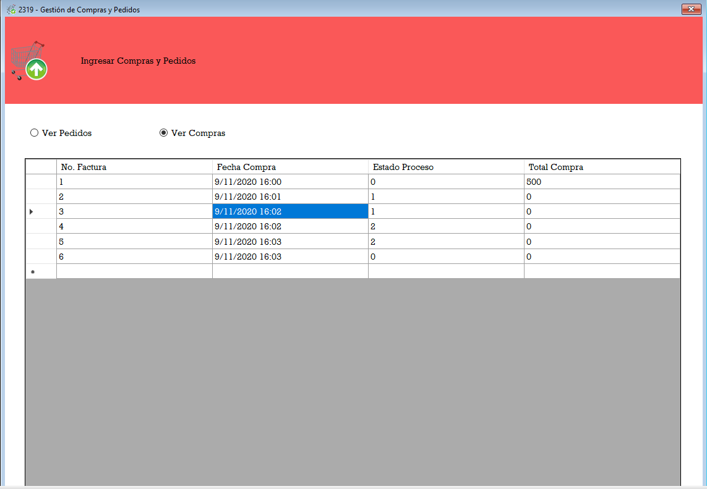

El formulario se visualiza de forma que este dentro del MDI del programa, en la parte inferior de la ventana se puede visualizar la fecha y hora actual en la que transcurre
el acceso al mismo formulario.
Para poder gestionar una compra a un proveedor o un pedido a fabrica tendrá que dar click en el siguiente botón .
A continuación, deberá seleccionar una de las opciones compras o pedidos para mostrar los datos
Este es el mensaje que debe ver en pantalla para confirmar el ingreso de datos.
Los datos ingresado se muestran en el grid, a si como los que ya están en el sistema.
